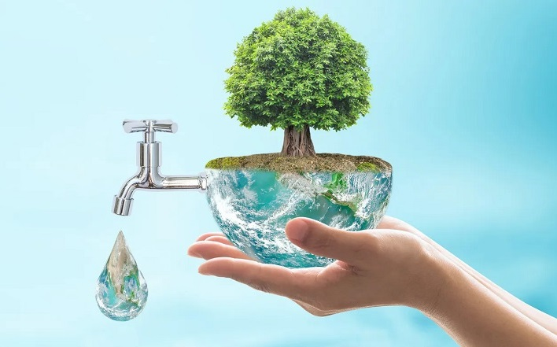
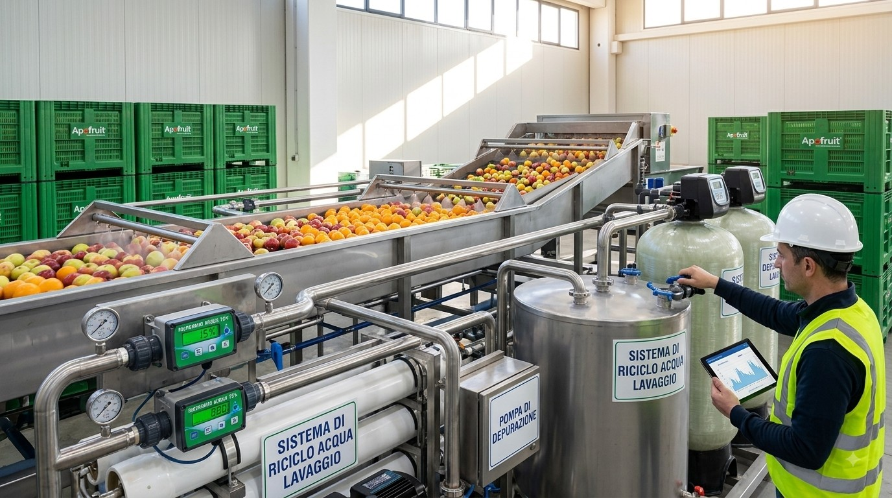
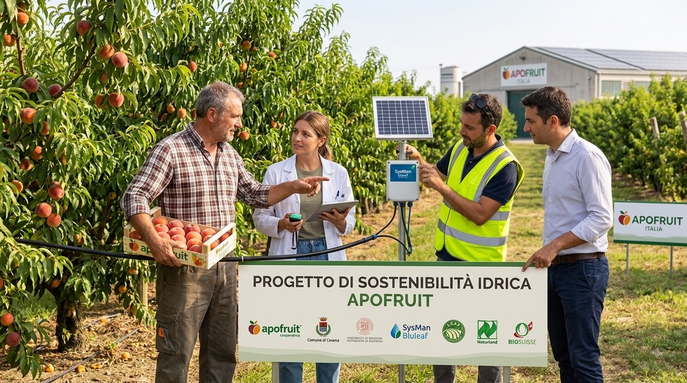
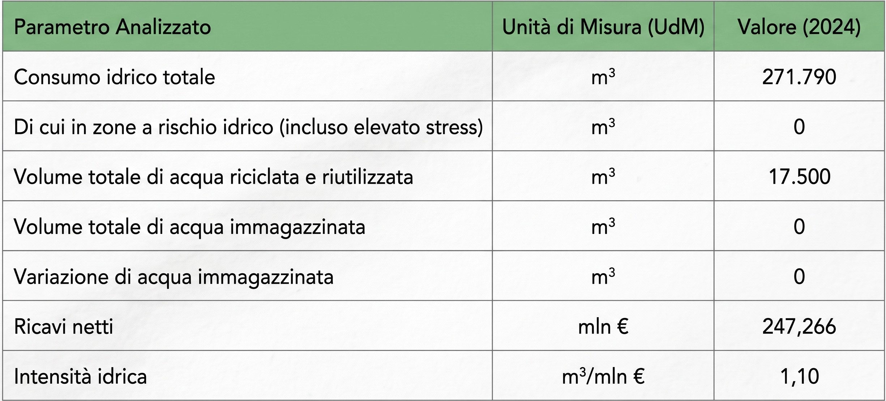

Gestione responsabile delle risorse idriche
Apofruit riconosce l’importanza di una gestione responsabile delle risorse idriche, elemento essenziale per il proprio processo produttivo e per la sostenibilità del sistema agricolo. Pur consapevole che il prelievo di acqua per uso industriale comporta un impatto sulla propria impronta idrica, l’Azienda ha avviato una serie di azioni mirate alla riduzione di tale impatto, attraverso il miglioramento dell’efficienza e l’adozione di pratiche più sostenibili. Questo impegno risponde non solo alle crescenti sfide ambientali legate alla disponibilità idrica, ma rappresenta anche un fattore chiave per la competitività e la resilienza del modello di business, fortemente legato all’uso responsabile delle risorse naturali.
Impatti, Rischi e Opportunità
Nell’ambito dell’analisi di materialità, Apofruit ha identificato quattro impatti rilevanti legati alle acque:
- Prelievi Idrici: Un impatto negativo connesso al prelievo d’acqua ai fini del processo produttivo degli stabilimenti con incidenza sulla water footprint.
- Consumi Idrici (Soci): Un impatto positivo legato all’efficienza nel consumo idrico dei soci grazie al supporto tecnico della Cooperativa.
- Consumi Idrici (Operazioni): Un impatto positivo connesso all’efficienza nel consumo idrico nelle operazioni di lavaggio grazie a sistemi di riciclo dell’acqua
- Scarichi di Acque: Un impatto positivo sull’efficienza nell’utilizzo dell’acqua e nei processi di depurazione.

Inoltre, è stato individuato un rischio rilevante legato alla perdita di quote di mercato dovuta al calo della produzione agricola (anche solo per specifiche varietà colturali) a causa di eventi siccitosi. Non sono state mappate opportunità rilevanti in questo specifico ambito.
Politiche Connesse alle Acque (E3-1)
L’acqua rappresenta una risorsa fondamentale per Apofruit, non solo per garantire la crescita e la qualità dei prodotti agricoli che commercializza, ma anche per il suo ruolo essenziale nei processi produttivi e nella sostenibilità ambientale. L’impresa è consapevole dell’importanza di un utilizzo responsabile e attento delle risorse idriche
- Operazioni proprie: L'azienda lavora per minimizzare gli sprechi e ottimizzare i consumi
- Filiera: Supporta i propri soci sul campo attraverso l'assistenza in pratiche agricole che promuovono l’efficienza nell’uso dell’acqua, anche in funzione dell’ottenimento di certificazioni ambientali
- Impegno: Pur non avendo ad oggi una politica formalizzata, la gestione sostenibile dell’acqua è una priorità; Apofruit si impegna a ridurre il suo impatto ambientale attraverso soluzioni innovative e rispettose dell’ecosistema.
Azioni e Risorse (E3-2)
Apofruit adotta un approccio collaborativo che coinvolge attivamente agricoltori, ricercatori, esperti di gestione idrica e istituzioni locali, con l’obiettivo di garantire un uso responsabile dell’acqua lungo l’intera filiera.

Certificazioni e Standard
- È in corso di implementazione presso diverse aziende agricole certificate GlobalG.A.P. l'Add.On Spring, che prevede requisiti stringenti per l’uso razionale delle risorse idriche
- Sono attive le certificazioni Biosuisse e Naturland, standard per l’agricoltura biologica che incoraggiano l’uso responsabile dell’acqua
Efficienza negli Stabilimenti
- Monitoraggio e manutenzione: Ogni anno viene destinato un budget per investimenti in tecnologie mirate al risparmio idrico, in particolare nei processi di lavaggio
- Sistemi di riciclo: Implementazione del riciclo dell’acqua nei processi produttivi (es. raffreddamento e lavaggio delle linee), ove tecnicamente possibile.
- Aggiornamento tecnologico: Investimenti per sostituzione e aggiornamento di impianti industriali con soluzioni a maggiore efficienza idrica.
- Valutazione del rischio: Analisi del rischio idrico (es. rischio esondazione) per integrare misure di prevenzione e adattamento.
Supporto ai Soci Produttori
- Tecnologia e Dati: Messa a disposizione del DSS (Decision Support System) Bluleaf per la gestione razionale delle irrigazioni, integrato con una rete attiva di centraline meteo
- Sostituzione impianti: Finanziamenti mirati per l'adozione di soluzioni a maggiore efficienza, a condizione che venga garantito un miglioramento minimo dei consumi tra il 5% e il 25%
- Nuovi impianti: Realizzazione di nuovi impianti irrigui ammessa solo in presenza di corpi idrici in buono stato qualitativo e quantitativo, per evitare ulteriori pressioni sugli ecosistemi
- Componenti tecniche accessorie: Finanziamento di filtri autopulenti, centraline di automazione e contatori per il monitoraggio rigoroso dei consumi idrici.
Metriche e Obiettivi: Consumi Idrici 2024 (E3-4)
Di seguito vengono presentati i dati riguardanti il consumo idrico delle operazioni proprie, il volume di acqua riciclata e riutilizzata, nonché l’intensità idrica. L’intensità idrica di Apofruit è calcolata come rapporto tra il consumo idrico in metri cubi e i ricavi netti 2024 (pari a 247,266 mln €).
